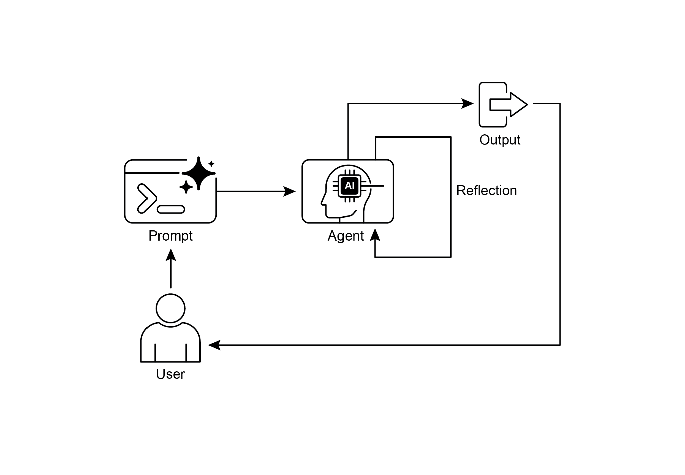
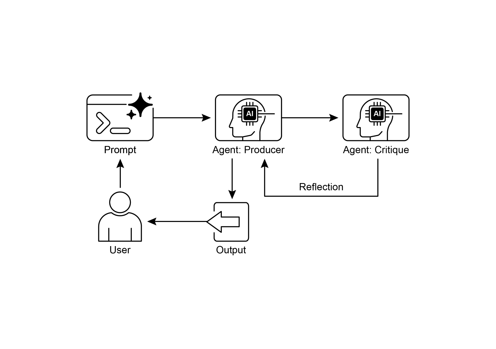

读书 · Agentic Design Patterns · 中英对照
第 4 章 · 反思模式 Reflection
Chapter 4: Reflection · 《Agentic Design Patterns》 · Antonio Gulli · 2025
让智能体评估自身输出并迭代改进，以提升质量与准确性。
← 返回导读 原书 PDF · 第63页起 上一章:第3章 下一章:第5章
本章要点
① 反思引入反馈回路：执行、评估、改进、迭代 ① 生产者-批评者分离角色可避免自我审查的认知偏差 ① 适用于高质量要求的写作、代码、规划等场景 ① 代价是更高延迟、成本与上下文膨胀
本章一图流
执行产出智能体先给出初版结果→评估反馈批评者角色独立审查→改进迭代按反馈修正并再评估→质量权衡换更高延迟与成本
反思用生产者与批评者分离的反馈回路迭代提升质量，代价是延迟与成本上升。
原书插图


本章划线句
划线句(逐字校验)
"The Reflection pattern involves an agent evaluating its own work, output, or internal state and using that evaluation to improve its performance or refine its response."
为什么值得划线:定义反思模式的核心机制
划线句(逐字校验)
"This separation of concerns is powerful because it prevents the "cognitive bias" of an agent reviewing its own work."
为什么值得划线:解释为何用独立批评者更客观
划线句(逐字校验)
"Use the Reflection pattern when the quality, accuracy, and detail of the final output are more important than speed and cost."
为什么值得划线:给出何时使用的判断准则
正文(英中对照)
"Chapter 4: Reflection Reflection Pattern Overview In the preceding chapters, we've explored fundamental agentic patterns: Chaining for sequential execution, Routing for dynamic path selection, and Parallelization for concurrent task execution. These patterns enable agents to perform complex tasks more efficiently and flexibly. However, even with sophisticated workflows, an agent's initial output or plan might not be optimal, accurate, or complete. This is where the Reflection pattern comes into play. The Reflection pattern involves an agent evaluating its own work, output, or internal state and using that evaluation to improve its performance or refine its response."
第4章：Reflection（反思）
Reflection 模式概述
在前面的章节中，我们探讨了基本的智能体模式：用于顺序执行的 Chaining（链式）、用于动态路径选择的 Routing（路由），以及用于并发任务执行的 Parallelization（并行化）。这些模式使智能体能够更高效、更灵活地执行复杂任务。然而，即使采用精巧的工作流，智能体的初始输出或计划也可能并非最优、准确或完整。这正是 Reflection 模式发挥作用之处。Reflection 模式涉及智能体评估自身的工作、输出或内部状态，并利用该评估来改进其性能或完善其响应。
导读注:引出 Reflection 模式：智能体自我评估并据此改进，弥补初始输出不足。
"It's a form of self-correction or self-improvement, allowing the agent to iteratively refine its output or adjust its approach based on feedback, internal critique, or comparison against desired criteria. Reflection can occasionally be facilitated by a separate agent whose specific role is to analyze the output of an initial agent. Unlike a simple sequential chain where output is passed directly to the next step, or routing which chooses a path, reflection introduces a feedback loop. The agent doesn't just produce an output; it then examines that output (or the process that generated it), identifies potential issues or areas for improvement, and uses those insights to generate a better version or modify its future actions."
这是一种自我纠正或自我改进的形式，使智能体（agent）能够基于反馈、内部批评或与期望标准的比较，迭代地优化其输出或调整其方法。Reflection 有时可由一个独立的智能体来促进，其特定角色是分析初始智能体的输出。与输出直接传递到下一步的简单顺序链，或选择路径的路由不同，Reflection 引入了反馈循环。智能体不只是产生输出；它随后检查该输出（或生成该输出的过程），识别潜在问题或可改进之处，并利用这些洞察生成更好的版本或修改其未来的行动。
导读注:点出 Reflection 的核心：反馈循环让智能体自我检查并迭代改进。
"The process typically involves: 1. Execution: The agent performs a task or generates an initial output. 2. Evaluation/Critique: The agent (often using another LLM call or a set of rules) analyzes the result from the previous step. This evaluation might check for factual accuracy, coherence, style, completeness, adherence to instructions, or other relevant criteria. 3. Reflection/Refinement: Based on the critique, the agent determines how to improve. This might involve generating a refined output, adjusting parameters for a subsequent step, or even modifying the overall plan. 4."
该过程通常包括：1. 执行（Execution）：智能体执行任务或生成初始输出。2. 评估/批评（Evaluation/Critique）：智能体（通常借助另一次 LLM 调用或一组规则）分析上一步的结果。这种评估可能检查事实准确性、连贯性、风格、完整性、对指令的遵循情况或其他相关标准。3. 反思/改进（Reflection/Refinement）：基于批评意见，智能体确定如何改进。这可能涉及生成改进后的输出、为后续步骤调整参数，甚至修改整体计划。4.
导读注:揭示智能体自我改进的三步闭环：执行、批评、反思。
"Iteration (Optional but common): The refined output or adjusted approach can then be executed, and the reflection process can repeat until a satisfactory result is achieved or a stopping condition is met. 1 A key and highly effective implementation of the Reflection pattern separates the process into two distinct logical roles: a Producer and a Critic. This is often called the "Generator-Critic" or "Producer-Reviewer" model. While a single agent can perform self-reflection, using two specialized agents (or two separate LLM calls with distinct system prompts) often yields more robust and unbiased results. 1. The Producer Agent: This agent's primary responsibility is to perform the initial execution of the task."
迭代（可选但常见）：随后可以执行精炼后的输出或调整后的方法，并且反思过程可以重复，直到达到满意的结果或满足停止条件。1 Reflection 模式的一个关键且高效的实现方式是将过程分为两个不同的逻辑角色：生产者（Producer）和批评者（Critic）。这通常被称为“生成器-批评者”（Generator-Critic）或“生产者-审查者”（Producer-Reviewer）模型。虽然单个 agent 可以执行自我反思，但使用两个专门的 agent（或两次具有不同 system prompt 的独立 LLM 调用）通常会产生更稳健、更无偏见的结果。1. 生产者 Agent：该 agent 的主要职责是执行任务的初始执行。
导读注:点出 Reflection 模式的关键实现：生产者-批评者双角色比单 agent 自省更稳健。
"It focuses entirely on generating the content, whether it's writing code, drafting a blog post, or creating a plan. It takes the initial prompt and produces the first version of the output. 2. The Critic Agent: This agent's sole purpose is to evaluate the output generated by the Producer. It is given a different set of instructions, often a distinct persona (e.g., "You are a senior software engineer," "You are a meticulous fact-checker"). The Critic's instructions guide it to analyze the Producer's work against specific criteria, such as factual accuracy, code quality, stylistic requirements, or completeness. It is designed to find flaws, suggest improvements, and provide structured feedback."
它完全专注于生成内容，无论是编写代码、起草博客文章，还是制定计划。它接收初始 prompt 并产出输出的第一版。2. 批评者 Agent（Critic Agent）：该 agent 的唯一目的是评估生产者（Producer）生成的输出。它被赋予一套不同的指令，通常是一个独特的人设（例如，"你是一名资深软件工程师"、"你是一名一丝不苟的事实核查员"）。批评者的指令引导它依据特定标准来分析生产者的工作，例如事实准确性、代码质量、风格要求或完整性。它旨在发现缺陷、提出改进建议并提供结构化反馈。
导读注:揭示双 Agent 协作模式：生产者生成、批评者评估，靠人设与标准分工。
"This separation of concerns is powerful because it prevents the "cognitive bias" of an agent reviewing its own work. The Critic agent approaches the output with a fresh perspective, dedicated entirely to finding errors and areas for improvement. The feedback from the Critic is then passed back to the Producer agent, which uses it as a guide to generate a new, refined version of the output. The provided LangChain and ADK code examples both implement this two-agent model: the LangChain example uses a specific "reflector_prompt" to create a critic persona, while the ADK example explicitly defines a producer and a reviewer agent. Implementing reflection often requires structuring the agent's workflow to include these feedback loops."
这种关注点分离之所以强大，是因为它防止了智能体审查自身工作时的"认知偏差"。Critic（批评者）智能体以全新的视角审视输出，完全专注于发现错误和改进空间。随后，来自 Critic 的反馈被传回 Producer（生产者）智能体，后者将其作为指南来生成经过改进的新版本输出。所提供的 LangChain 和 ADK 代码示例都实现了这种双智能体模型：LangChain 示例使用特定的 "reflector_prompt" 来创建批评者角色，而 ADK 示例则明确定义了 producer 和 reviewer 智能体。实现 Reflection 通常需要将智能体的工作流结构化，以包含这些反馈循环。
导读注:关注点分离让批评者以全新视角审查，避免自我审查的认知偏差。
"This can be achieved through iterative loops in code, or using frameworks that support state management and conditional transitions based on evaluation results. While a single step of evaluation and refinement can be implemented within either a LangChain/LangGraph, or ADK, or Crew.AI chain, true iterative reflection typically involves more complex orchestration. The Reflection pattern is crucial for building agents that can produce high-quality outputs, handle nuanced tasks, and exhibit a degree of self-awareness and adaptability."
这可以通过代码中的迭代循环来实现，或使用支持状态管理和基于评估结果的条件转换的框架。虽然单步的评估与改进可以在 LangChain/LangGraph、ADK 或 Crew.AI 链中实现，但真正的迭代式 Reflection 通常涉及更复杂的编排。Reflection 模式对于构建能够产生高质量输出、处理细微任务并表现出一定自我意识和适应性的 agent 至关重要。
导读注:点明 Reflection 需复杂编排，是高质量 agent 的关键。
"It moves agents beyond simply executing instructions towards a more sophisticated form of problem-solving and content generation. 2 The intersection of reflection with goal setting and monitoring (see Chapter 11) is worth noticing. A goal provides the ultimate benchmark for the agent's self-evaluation, while monitoring tracks its progress. In a number of practical cases, Reflection then might act as the corrective engine, using monitored feedback to analyze deviations and adjust its strategy. This synergy transforms the agent from a passive executor into a purposeful system that adaptively works to achieve its objectives."
它使智能体超越了单纯执行指令的层面，迈向更复杂的问题解决与内容生成形式。2 值得关注的是反思（Reflection）与目标设定及监控（见第11章）的交汇。目标为智能体的自我评估提供了终极基准，而监控则追踪其进展。在许多实际案例中，反思随后可能充当纠错引擎，利用监控反馈来分析偏差并调整策略。这种协同作用将智能体从被动的执行者转变为有目的的系统，能够自适应地努力实现其目标。
导读注:点出反思与目标监控的协同如何让智能体从被动执行者变为自适应系统。
"Furthermore, the effectiveness of the Reflection pattern is significantly enhanced when the LLM keeps a memory of the conversation (see Chapter 8). This conversational history provides crucial context for the evaluation phase, allowing the agent to assess its output not just in isolation, but against the backdrop of previous interactions, user feedback, and evolving goals. It enables the agent to learn from past critiques and avoid repeating errors. Without memory, each reflection is a self-contained event; with memory, reflection becomes a cumulative process where each cycle builds upon the last, leading to more intelligent and context-aware refinement."
此外，当 LLM 保留对话记忆时（见第 8 章），Reflection 模式的效果会显著增强。这种对话历史为评估阶段提供了关键上下文，使 agent 不仅能在孤立状态下评估其输出，还能在先前交互、用户反馈和不断演变的目标背景下进行评估。它使 agent 能够从过去的批评中学习并避免重复错误。没有记忆时，每次反思都是自包含的事件；有了记忆，反思就成为一个累积过程，每个循环都建立在前一个循环之上，从而实现更智能、更具上下文感知的改进。
导读注:记忆让 Reflection 从孤立事件变为累积过程，是提升 agent 自我改进效果的关键。
"Practical Applications & Use Cases The Reflection pattern is valuable in scenarios where output quality, accuracy, or adherence to complex constraints is critical: 1. Creative Writing and Content Generation: Refining generated text, stories, poems, or marketing copy. ● Use Case: An agent writing a blog post. ○ Reflection: Generate a draft, critique it for flow, tone, and clarity, then rewrite based on the critique. Repeat until the post meets quality standards. ○ Benefit: Produces more polished and effective content. 2."
实际应用与用例 Reflection 模式在输出质量、准确性或对复杂约束的遵循至关重要的场景中很有价值：1. 创意写作与内容生成：优化生成的文本、故事、诗歌或营销文案。● 用例：一个撰写博客文章的 agent。○ Reflection：生成草稿，对其流畅性、语气和清晰度进行批判，然后根据批判重写。重复直到文章达到质量标准。○ 收益：产出更精炼、更有效的内容。2.
导读注:展示 Reflection 模式在创意写作中的草稿-批判-重写循环，强调质量优化。
"Code Generation and Debugging: Writing code, identifying errors, and fixing them. ● Use Case: An agent writing a Python function. ○ Reflection: Write initial code, run tests or static analysis, identify errors or inefficiencies, then modify the code based on the findings. ○ Benefit: Generates more robust and functional code. 3. Complex Problem Solving: Evaluating intermediate steps or proposed solutions in multi-step reasoning tasks. ● Use Case: An agent solving a logic puzzle. 3 ○ Reflection: Propose a step, evaluate if it leads closer to the solution or introduces contradictions, backtrack or choose a different step if needed. ○ Benefit: Improves the agent's ability to navigate complex problem spaces. 4."
代码生成与调试（Code Generation and Debugging）：编写代码、识别错误并修复错误。● 用例：一个智能体编写 Python 函数。○ Reflection：编写初始代码，运行测试或静态分析，识别错误或低效之处，然后根据发现修改代码。○ 收益：生成更健壮、更可用的代码。3. 复杂问题求解（Complex Problem Solving）：在多步推理任务中评估中间步骤或候选解决方案。● 用例：一个智能体求解逻辑谜题。3 ○ Reflection：提出一个步骤，评估它是否更接近解决方案或引入矛盾，必要时回溯或选择不同步骤。○ 收益：提升智能体在复杂问题空间中导航的能力。4.
导读注:展示 Reflection 在代码调试与多步推理中的通用价值：先试错、再评估、后修正。
"Summarization and Information Synthesis: Refining summaries for accuracy, completeness, and conciseness. ● Use Case: An agent summarizing a long document. ○ Reflection: Generate an initial summary, compare it against key points in the original document, refine the summary to include missing information or improve accuracy. ○ Benefit: Creates more accurate and comprehensive summaries. 5."
摘要与信息综合：优化摘要以确保准确性、完整性和简洁性。● 用例：一个 agent（智能体）对长文档进行摘要。○ Reflection（反思）：生成初始摘要，将其与原始文档中的关键要点进行比较，优化摘要以纳入缺失信息或提高准确性。○ 优势：生成更准确、更全面的摘要。5.
导读注:展示 Reflection 如何通过对照原文迭代优化摘要，提升准确性与完整性。
"Planning and Strategy: Evaluating a proposed plan and identifying potential flaws or improvements. ● Use Case: An agent planning a series of actions to achieve a goal. ○ Reflection: Generate a plan, simulate its execution or evaluate its feasibility against constraints, revise the plan based on the evaluation. ○ Benefit: Develops more effective and realistic plans. 6."
规划与策略：评估一个提议的计划，并识别潜在的缺陷或改进之处。● 用例：一个 agent（智能体）规划一系列行动以实现目标。○ Reflection（反思）：生成一个计划，模拟其执行或根据约束条件评估其可行性，基于评估修订计划。○ 益处：制定更有效且更现实的计划。6.
导读注:展示 Reflection 如何通过模拟与评估让 agent 的计划更可行。
"Conversational Agents: Reviewing previous turns in a conversation to maintain context, correct misunderstandings, or improve response quality. ● Use Case: A customer support chatbot. ○ Reflection: After a user response, review the conversation history and the last generated message to ensure coherence and address the user's latest input accurately. ○ Benefit: Leads to more natural and effective conversations. Reflection adds a layer of meta-cognition to agentic systems, enabling them to learn from their own outputs and processes, leading to more intelligent, reliable, and high-quality results."
对话式智能体（Conversational Agents）：回顾对话中的先前轮次，以保持上下文、纠正误解或提升回复质量。● 用例：客户支持聊天机器人。○ Reflection（反思）：在用户回复后，回顾对话历史和最后生成的消息，以确保连贯性并准确回应用户的最新输入。○ 收益：带来更自然、更有效的对话。Reflection 为智能体系统增加了一层元认知，使其能够从自身的输出和过程中学习，从而产生更智能、更可靠、更高质量的结果。
导读注:Reflection让智能体回顾自身输出与对话历史，实现元认知式自我改进。
"Hands-On Code Example (LangChain) The implementation of a complete, iterative reflection process necessitates mechanisms for state management and cyclical execution. While these are handled natively in graph-based frameworks like LangGraph or through custom procedural code, the fundamental principle of a single reflection cycle can be demonstrated effectively using the compositional syntax of LCEL (LangChain Expression Language). This example implements a reflection loop using the Langchain library and OpenAI's GPT-4o model to iteratively generate and refine a Python function that calculates the 4 factorial of a number."
动手代码示例（LangChain） 实现一个完整的、迭代式 Reflection（反思）过程，需要状态管理和循环执行的机制。虽然这些机制在图式框架（如 LangGraph）中或通过自定义过程式代码原生处理，但单个 Reflection 循环的基本原理可以用 LCEL（LangChain Expression Language，LangChain 表达式语言）的组合语法有效演示。本示例使用 Langchain 库和 OpenAI 的 GPT-4o 模型实现一个 Reflection 循环，以迭代生成并改进一个计算数字 4 的阶乘的 Python 函数。
导读注:用 LCEL 组合语法演示单轮 Reflection 循环，展示迭代生成与改进代码的基本原理。
"The process starts with a task prompt, generates initial code, and then repeatedly reflects on the code based on critiques from a simulated senior software engineer role, refining the code in each iteration until the critique stage determines the code is perfect or a maximum number of iterations is reached. Finally, it prints the resulting refined code. First, ensure you have the necessary libraries installed: pip install langchain langchain-community langchain-openai You will also need to set up your environment with your API key for the language model you choose (e.g., OpenAI, Google Gemini, Anthropic)."
该过程从任务 prompt 开始，生成初始代码，然后基于模拟的资深软件工程师（senior software engineer）角色给出的批评，反复对代码进行 Reflection，在每次迭代中精炼代码，直到批评阶段判定代码完美或达到最大迭代次数。最后，它打印出最终精炼后的代码。首先，确保已安装必要的库：pip install langchain langchain-community langchain-openai。你还需要使用所选语言模型（例如 OpenAI、Google Gemini、Anthropic）的 API key 来设置环境。
导读注:展示Reflection 迭代精炼代码的完整流程，并给出依赖安装与 API key 配置。
python
import os
from dotenv import load_dotenv
from langchain_openai import ChatOpenAI
from langchain_core.prompts import ChatPromptTemplate
from langchain_core.messages import SystemMessage, HumanMessagepython
# --- Configuration -- # Load environment variables from .env file (for OPENAI_API_KEY)
load_dotenv()python
# Check if the API key is set
if not os.getenv("OPENAI_API_KEY"):
raise ValueError("OPENAI_API_KEY not found in .env file. Please
add it.")"# Initialize the Chat LLM. We use gpt-4o for better reasoning. # A lower temperature is used for more deterministic outputs. llm = ChatOpenAI(model="gpt-4o", temperature=0.1) def run_reflection_loop(): """ Demonstrates a multi-step AI reflection loop to progressively improve a Python function. """ # --- The Core Task -- task_prompt = """ Your task is to create a Python function named `calculate_factorial`. This function should do the following: 1. Accept a single integer `n` as input. 5 2. Calculate its factorial (n!). 3. Include a clear docstring explaining what the function does. 4. Handle edge cases: The factorial of 0 is 1. 5. Handle invalid input: Raise a ValueError if the input is a negative number."
# 初始化 Chat LLM。我们使用 gpt-4o 以获得更好的推理能力。 # 使用较低的 temperature 以获得更确定性的输出。
llm = ChatOpenAI(model="gpt-4o", temperature=0.1)
def run_reflection_loop():
"""
演示一个多步 AI Reflection（反思）循环，以逐步改进一个 Python 函数。
"""
# --- 核心任务 --
task_prompt = """
你的任务是创建一个名为 `calculate_factorial` 的 Python 函数。
该函数应完成以下事项：
1. 接受单个整数 `n` 作为输入。 5
2. 计算其阶乘（n!）。
3. 包含一个清晰的 docstring，说明该函数的作用。
4. 处理边界情况：0 的阶乘为 1。
5. 处理无效输入：如果输入为负数，则抛出 ValueError。
导读注:展示用 Reflection 循环逐步改进代码的提示词设计，注意边界与异常处理要求。
"""" # --- The Reflection Loop -- max_iterations = 3 current_code = "" # We will build a conversation history to provide context in each step. message_history = [HumanMessage(content=task_prompt)]"
# --- Reflection 循环 --
max_iterations = 3
current_code = ""
# 我们将构建对话历史，以便在每一步中提供上下文。
message_history = [HumanMessage(content=task_prompt)]
导读注:展示 Reflection 循环的初始化：max_iterations=3 与对话历史构建。
python
for i in range(max_iterations):
print("\n" + "="*25 + f" REFLECTION LOOP: ITERATION {i + 1} "
+ "="*25)"# --- 1. GENERATE / REFINE STAGE -- # In the first iteration, it generates. In subsequent iterations, it refines. if i == 0: print("\n>>> STAGE 1: GENERATING initial code...") # The first message is just the task prompt. response = llm.invoke(message_history) current_code = response.content else: print("\n>>> STAGE 1: REFINING code based on previous critique...") # The message history now contains the task, # the last code, and the last critique. # We instruct the model to apply the critiques. message_history.append(HumanMessage(content="Please refine the code using the critiques provided.")) response = llm.invoke(message_history) current_code = response.content"
# --- 1. 生成 / 精炼阶段 -- # 在第一次迭代中，它生成代码。在后续迭代中，它精炼代码。
if i == 0:
print("\n>>> 阶段 1：生成初始代码...")
# 第一条消息只是任务 prompt。
response = llm.invoke(message_history)
current_code = response.content
else:
print("\n>>> 阶段 1：基于之前的批评精炼代码...")
# 消息历史现在包含任务、
# 上一次的代码，以及上一次的批评。
# 我们指示模型应用这些批评。
message_history.append(HumanMessage(content="Please refine the code using the critiques provided."))
response = llm.invoke(message_history)
current_code = response.content
导读注:首轮生成、后续精炼：同一阶段用 i==0 分支区分生成与基于批评的改进。
python
print("\n--- Generated Code (v" + str(i + 1) + ") ---\n" +
current_code)
message_history.append(response) # Add the generated code to
history"# --- 2. REFLECT STAGE -- print("\n>>> STAGE 2: REFLECTING on the generated code...") # Create a specific prompt for the reflector agent. # This asks the model to act as a senior code reviewer. 6 reflector_prompt = [ SystemMessage(content=""" You are a senior software engineer and an expert in Python. Your role is to perform a meticulous code review. Critically evaluate the provided Python code based on the original task requirements. Look for bugs, style issues, missing edge cases, and areas for improvement. If the code is perfect and meets all requirements, respond with the single phrase 'CODE_IS_PERFECT'. Otherwise, provide a bulleted list of your critiques. """), HumanMessage(content=f"Original Task:\n{task_prompt}\n\nCode to Review:\n{current_code}") ]"
# --- 2. REFLECT 阶段 --
print("\n>>> STAGE 2: REFLECTING on the generated code...")
# 为 reflector agent 创建一个特定的 prompt。
# 这要求模型扮演资深代码审查者的角色。
6 reflector_prompt = [
SystemMessage(content="""
你是一名资深软件工程师和 Python 专家。你的职责是执行细致的代码审查。
基于原始任务要求，批判性地评估所提供的 Python 代码。
查找 bug、风格问题、遗漏的边界情况以及可改进之处。
如果代码完美且满足所有要求，请仅回复短语 'CODE_IS_PERFECT'。
否则，请提供一份要点式的批评清单。
"""),
HumanMessage(content=f"原始任务：\n{task_prompt}\n\n待审查代码：\n{current_code}")
]
导读注:展示 Reflection 阶段如何用 prompt 让模型扮演资深审查者并给出结构化批评。
text
critique_response = llm.invoke(reflector_prompt)
critique = critique_response.contentpython
# --- 3. STOPPING CONDITION -- if "CODE_IS_PERFECT" in critique:
print("\n--- Critique ---\nNo further critiques found. The
code is satisfactory.")
break"print("\n--- Critique ---\n" + critique) # Add the critique to the history for the next refinement loop. message_history.append(HumanMessage(content=f"Critique of the previous code:\n{critique}"))"
print("\n--- Critique ---\n" + critique) # 将批评意见加入历史记录，供下一轮 refinement loop 使用。message_history.append(HumanMessage(content=f"Critique of the previous code:\n{critique}"))
导读注:展示如何把 critique 写入 message_history，驱动下一轮 refinement loop。
python
print("\n" + "="*30 + " FINAL RESULT " + "="*30)
print("\nFinal refined code after the reflection process:\n")
print(current_code)python
if __name__ == "__main__":
run_reflection_loop()"The code begins by setting up the environment, loading API keys, and initializing a powerful language model like GPT-4o with a low temperature for focused outputs. The core task is defined by a prompt asking for a Python function to calculate the factorial of a number, including specific requirements for docstrings, edge cases (factorial of 0), and error handling for negative input. The run_reflection_loop function orchestrates the iterative refinement process. Within the loop, in the first iteration, the 7 language model generates initial code based on the task prompt. In subsequent iterations, it refines the code based on critiques from the previous step."
代码首先设置环境、加载 API 密钥，并初始化一个强大的语言模型（如 GPT-4o），采用较低的温度以获得聚焦的输出。核心任务由一个 prompt 定义，要求编写一个计算数字阶乘的 Python 函数，包括对 docstring、边界情况（0 的阶乘）以及负数输入错误处理的具体要求。run_reflection_loop 函数编排迭代优化过程。在循环中，第一次迭代时，语言模型根据任务 prompt 生成初始代码。在后续迭代中，它根据上一步的批评来优化代码。
导读注:展示 Reflection 循环如何让 LLM 先写代码、再依批评迭代改进。
"A separate "reflector" role, also played by the language model but with a different system prompt, acts as a senior software engineer to critique the generated code against the original task requirements. This critique is provided as a bulleted list of issues or the phrase 'CODE_IS_PERFECT' if no issues are found. The loop continues until the critique indicates the code is perfect or a maximum number of iterations is reached. The conversation history is maintained and passed to the language model in each step to provide context for both generation/refinement and reflection stages. Finally, the script prints the last generated code version after the loop concludes."
一个独立的“反思器”（reflector）角色，同样由语言模型扮演，但使用不同的系统提示（system prompt），充当资深软件工程师，依据原始任务需求对生成的代码进行评审。该评审以问题要点列表的形式给出，若未发现问题则给出短语 'CODE_IS_PERFECT'。循环持续进行，直到评审表明代码完美或达到最大迭代次数为止。对话历史会被保留，并在每一步传递给语言模型，为生成/精炼与反思阶段提供上下文。最后，脚本在循环结束后打印最后生成的代码版本。
导读注:揭示反思器角色与迭代终止条件，是自我修正循环的关键机制。
"Hands-On Code Example (ADK) Let's now look at a conceptual code example implemented using the Google ADK."
动手代码示例（ADK） 现在让我们看一个使用 Google ADK 实现的概念性代码示例。
导读注:展示基于 Google ADK 的概念性代码示例，衔接前文理论。
"Specifically, the code showcases this by employing a Generator-Critic structure, where one component (the Generator) produces an initial result or plan, and another component (the Critic) provides critical feedback or a critique, guiding the Generator towards a more refined or accurate final output. from google.adk.agents import SequentialAgent, LlmAgent # The first agent generates the initial draft. generator = LlmAgent( name="DraftWriter", description="Generates initial draft content on a given subject.", instruction="Write a short, informative paragraph about the user's subject.", output_key="draft_text" # The output is saved to this state key. ) # The second agent critiques the draft from the first agent. reviewer = LlmAgent( name="FactChecker", description="Reviews a given text for factual accuracy and provides a structured critique.", instruction=""" You are a meticulous fact-checker. 1."
具体来说，代码通过采用 Generator-Critic（生成器-批评者）结构来展示这一点：其中一个组件（Generator，生成器）生成初始结果或计划，另一个组件（Critic，批评者）提供批判性反馈或评论，引导 Generator 生成更精炼或更准确的最终输出。from google.adk.agents import SequentialAgent, LlmAgent # The first agent generates the initial draft. generator = LlmAgent( name="DraftWriter", description="Generates initial draft content on a given subject.", instruction="Write a short, informative paragraph about the user's subject.", output_key="draft_text" # The output is saved to this state key. ) # The second agent critiques the draft from the first agent. reviewer = LlmAgent( name="FactChecker", description="Reviews a given text for factual accuracy and provides a structured critique.", instruction=""" You are a meticulous fact-checker. 1.
导读注:Generator-Critic 结构：生成器产出初稿，批评者反馈引导优化。
"Read the text provided in the state key 'draft_text'. 2. Carefully verify the factual accuracy of all claims. 3."
读取 state key 'draft_text' 中提供的文本。2. 仔细核实所有陈述的事实准确性。3.
导读注:该段是操作步骤说明，核心在于核实事实准确性。
"Your final output must be a dictionary containing two keys: - "status": A string, either "ACCURATE" or "INACCURATE". - "reasoning": A string providing a clear explanation for your status, citing specific issues if any are found. 8 """, output_key="review_output" # The structured dictionary is saved here. ) # The SequentialAgent ensures the generator runs before the reviewer. review_pipeline = SequentialAgent( name="WriteAndReview_Pipeline", sub_agents=[generator, reviewer] ) # Execution Flow: # 1. generator runs -> saves its paragraph to state['draft_text']. # 2. reviewer runs -> reads state['draft_text'] and saves its dictionary output to state['review_output']."
你的最终输出必须是一个包含两个键的字典：- "status"：一个字符串，取值为 "ACCURATE" 或 "INACCURATE"。- "reasoning"：一个字符串，为 status 提供清晰的解释，若发现问题则引用具体问题。8 """，output_key="review_output" # 结构化字典保存在此处。) # SequentialAgent 确保 generator 在 reviewer 之前运行。review_pipeline = SequentialAgent( name="WriteAndReview_Pipeline", sub_agents=[generator, reviewer] ) # 执行流程：# 1. generator 运行 -> 将其段落保存到 state['draft_text']。# 2. reviewer 运行 -> 读取 state['draft_text'] 并将其字典输出保存到 state['review_output']。
导读注:展示SequentialAgent如何用output_key串联生成与评审两个子代理。
"This code demonstrates the use of a sequential agent pipeline in Google ADK for generating and reviewing text. It defines two LlmAgent instances: generator and reviewer. The generator agent is designed to create an initial draft paragraph on a given subject. It is instructed to write a short and informative piece and saves its output to the state key draft_text. The reviewer agent acts as a fact-checker for the text produced by the generator. It is instructed to read the text from draft_text and verify its factual accuracy. The reviewer's output is a structured dictionary with two keys: status and reasoning. status indicates if the text is "ACCURATE" or "INACCURATE", while reasoning provides an explanation for the status."
这段代码演示了在 Google ADK 中使用顺序式智能体流水线（sequential agent pipeline）来生成和审阅文本。它定义了两个 LlmAgent 实例：generator 和 reviewer。generator 智能体旨在针对给定主题创建初始草稿段落。它被指示撰写一段简短且信息丰富的文字，并将其输出保存到状态键 draft_text。reviewer 智能体充当 generator 所生成文本的事实核查员。它被指示从 draft_text 读取文本并核实其事实准确性。reviewer 的输出是一个包含两个键的结构化字典：status 和 reasoning。status 表示文本是 "ACCURATE" 还是 "INACCURATE"，而 reasoning 则为该状态提供解释。
导读注:展示 ADK 顺序流水线：生成→核查，审阅结果用结构化字典返回状态与理由。
"This dictionary is saved to the state key review_output. A SequentialAgent named review_pipeline is created to manage the execution order of the two agents. It ensures that the generator runs first, followed by the reviewer. The overall execution flow is that the generator produces text, which is then saved to the state. Subsequently, the reviewer reads this text from the state, performs its fact-checking, and saves its findings (the status and reasoning) back to the state. This pipeline allows for a structured process of content creation and review using separate agents.Note: An alternative implementation utilizing ADK's LoopAgent is also available for those interested."
该字典被保存到状态键 review_output 中。创建了一个名为 review_pipeline 的 SequentialAgent（顺序代理）来管理两个代理的执行顺序。它确保生成器先运行，随后是审查器。整体执行流程是：生成器生成文本，文本随后被保存到状态中。接着，审查器从状态中读取该文本，执行事实核查，并将其发现（状态和推理）保存回状态。该流水线允许使用独立的代理进行结构化的内容创建与审查过程。注意：有兴趣的读者也可以使用 ADK 的 LoopAgent（循环代理）实现替代方案。
导读注:SequentialAgent 编排生成与审查两代理，通过状态键传递文本与核查结果。
"Before concluding, it's important to consider that while the Reflection pattern significantly enhances output quality, it comes with important trade-offs. The iterative process, though powerful, can lead to higher costs and latency, since every refinement loop may require a new LLM call, making it suboptimal for time-sensitive applications. Furthermore, the pattern is memory-intensive; with each iteration, the conversational history expands, including the initial output, critique, and subsequent refinements. 9 At Glance What: An agent's initial output is often suboptimal, suffering from inaccuracies, incompleteness, or a failure to meet complex requirements."
在得出结论之前，重要的是要考虑到，虽然 Reflection（反思）模式显著提升了输出质量，但它也伴随着重要的权衡。这种迭代过程虽然强大，却可能导致更高的成本和延迟，因为每一次精炼循环都可能需要新的 LLM 调用，使其对时间敏感的应用而言并非最优。此外，该模式是内存密集型的；随着每次迭代，对话历史会不断扩展，包括初始输出、批评意见以及后续的精炼内容。9 概览 是什么：智能体的初始输出往往并非最优，存在不准确、不完整或未能满足复杂需求的问题。
导读注:Reflection 模式并非没有代价：提升质量的同时带来成本、延迟与内存开销。
"Basic agentic workflows lack a built-in process for the agent to recognize and fix its own errors. This is solved by having the agent evaluate its own work or, more robustly, by introducing a separate logical agent to act as a critic, preventing the initial response from being the final one regardless of quality. Why: The Reflection pattern offers a solution by introducing a mechanism for self-correction and refinement. It establishes a feedback loop where a "producer" agent generates an output, and then a "critic" agent (or the producer itself) evaluates it against predefined criteria. This critique is then used to generate an improved version."
基础的智能体（agentic）工作流缺乏让智能体识别并修正自身错误的内置流程。解决方法是让智能体评估自己的工作，或者更稳健地引入一个独立的逻辑智能体充当批评者（critic），从而避免初始回复无论质量如何都成为最终回复。原因：Reflection 模式通过引入自我修正与精炼机制提供了解决方案。它建立一个反馈循环：由"生产者"（producer）智能体生成输出，然后由"批评者"（critic）智能体（或生产者自身）依据预定义标准对其进行评估。该批评随后被用于生成改进版本。
导读注:Reflection 模式用生产者-批评者反馈循环实现自我纠错，避免初稿即终稿。
"This iterative process of generation, evaluation, and refinement progressively enhances the quality of the final result, leading to more accurate, coherent, and reliable outcomes. Rule of thumb: Use the Reflection pattern when the quality, accuracy, and detail of the final output are more important than speed and cost. It is particularly effective for tasks like generating polished long-form content, writing and debugging code, and creating detailed plans. Employ a separate critic agent when tasks require high objectivity or specialized evaluation that a generalist producer agent might miss. Visual summary 10 Fig. 1: Reflection design pattern, self-reflection 11 Fig.2: Reflection design pattern, producer and critique agent"
这种生成、评估与改进的迭代过程会逐步提升最终结果的质量，从而带来更准确、更连贯、更可靠的结果。经验法则：当最终输出的质量、准确性和细节比速度和成本更重要时，使用 Reflection 模式。它对于生成精炼的长篇内容、编写和调试代码以及创建详细计划等任务尤其有效。当任务需要高度客观性或专业化评估，而通才型生产者 agent 可能遗漏时，应采用单独的 critic agent。视觉摘要 10 图 1：Reflection 设计模式，自我反思 11 图 2：Reflection 设计模式，生产者与批评 agent
导读注:给出 Reflection 模式的适用法则：质量优先于速度成本时使用，并区分自我反思与独立 critic agent。
关键要点 Key Takeaways
"● The primary advantage of the Reflection pattern is its ability to iteratively self-correct and refine outputs, leading to significantly higher quality, accuracy, and adherence to complex instructions. ● It involves a feedback loop of execution, evaluation/critique, and refinement. Reflection is essential for tasks requiring high-quality, accurate, or nuanced outputs. ● A powerful implementation is the Producer-Critic model, where a separate agent (or prompted role) evaluates the initial output."
● Reflection 模式的主要优势在于其能够迭代式自我纠正并优化输出，从而显著提升质量、准确性以及对复杂指令的遵循程度。● 它包含一个由执行、评估/批判和优化构成的反馈循环。对于需要高质量、准确或细致输出的任务，Reflection 至关重要。● 一种强大的实现是 Producer-Critic（生产者-批判者）模型，其中由独立的 agent（或通过 prompt 设定的角色）评估初始输出。
导读注:点明 Reflection 的核心价值：迭代自我纠正，并引出 Producer-Critic 实现。
"This separation of concerns enhances objectivity and allows for more specialized, structured feedback. 12 ● However, these benefits come at the cost of increased latency and computational expense, along with a higher risk of exceeding the model's context window or being throttled by API services. ● While full iterative reflection often requires stateful workflows (like LangGraph), a single reflection step can be implemented in LangChain using LCEL to pass output for critique and subsequent refinement. ● Google ADK can facilitate reflection through sequential workflows where one agent's output is critiqued by another agent, allowing for subsequent refinement steps. ● This pattern enables agents to perform self-correction and enhance their performance over time."
这种关注点分离增强了客观性，并允许更专业化、结构化的反馈。12 ● 然而，这些好处是以增加延迟和计算开销为代价的，同时还伴随着更高的超出模型上下文窗口（context window）或被 API 服务限流的风险。● 虽然完整的迭代式 Reflection 通常需要有状态的工作流（如 LangGraph），但单次 Reflection 步骤可以在 LangChain 中使用 LCEL 实现，将输出传递用于批判（critique）和后续改进。● Google ADK 可以通过顺序工作流促进 Reflection，其中一个 agent 的输出由另一个 agent 进行批判，从而允许后续的改进步骤。● 这种模式使 agent 能够执行自我纠正（self-correction），并随着时间的推移提升其性能。
导读注:点出关注点分离的收益与代价，并给出单步 Reflection 可用 LCEL 实现的落地要点。
结论 Conclusion
"The reflection pattern provides a crucial mechanism for self-correction within an agent's workflow, enabling iterative improvement beyond a single-pass execution. This is achieved by creating a loop where the system generates an output, evaluates it against specific criteria, and then uses that evaluation to produce a refined result. This evaluation can be performed by the agent itself (self-reflection) or, often more effectively, by a distinct critic agent, which represents a key architectural choice within the pattern. While a fully autonomous, multi-step reflection process requires a robust architecture for state management, its core principle is effectively demonstrated in a single generate-critique-refine cycle."
Reflection（反思）模式为 agent 工作流中的自我纠错提供了关键机制，使系统能够超越单次执行实现迭代改进。其实现方式是创建一个循环：系统生成输出，依据特定标准对其进行评估，再利用该评估结果产出经过改进的结果。这种评估可由 agent 自身完成（self-reflection，自我反思），或者——通常更有效的方式——由一个独立的 critic agent（评审 agent）完成，这构成了该模式中的一项关键架构选择。尽管完全自主的多步反思过程需要健壮的状态管理架构，但其核心原理可在单次 generate-critique-refine（生成—评审—改进）循环中得到有效展示。
导读注:点出 Reflection 模式的核心：生成—评审—改进循环，以及独立 critic agent 的架构价值。
"As a control structure, reflection can be integrated with other foundational patterns to construct more robust and functionally complex agentic systems."
作为一种控制结构，Reflection 可以与其他基础模式集成，以构建更健壮、功能更复杂的智能体系统。
导读注:点明 Reflection 作为控制结构可与其他模式组合，提升系统健壮性。
参考文献 References
"Here are some resources for further reading on the Reflection pattern and related concepts: 1. Training Language Models to Self-Correct via Reinforcement Learning, https://arxiv.org/abs/2409.12917 2. LangChain Expression Language (LCEL) Documentation: https://python.langchain.com/docs/introduction/ 3. LangGraph Documentation:https://www.langchain.com/langgraph 13 4. Google Agent Developer Kit (ADK) Documentation (Multi-Agent Systems): https://google.github.io/adk-docs/agents/multi-agents/ 14"
以下是一些关于 Reflection 模式及相关概念的进一步阅读资源：1. Training Language Models to Self-Correct via Reinforcement Learning，https://arxiv.org/abs/2409.12917 2. LangChain Expression Language (LCEL) 文档：https://python.langchain.com/docs/introduction/ 3. LangGraph 文档：https://www.langchain.com/langgraph 13 4. Google Agent Developer Kit (ADK) 文档（多智能体系统）：https://google.github.io/adk-docs/agents/multi-agents/ 14
导读注:资源清单涵盖强化学习自纠与 LCEL、LangGraph、ADK 等框架文档。
来源与用途
《Agentic Design Patterns》,Antonio Gulli · 2025 · 原书 PDF。本页为学习用途的对照整理,版权归原作者;有问题到读书导师处提问,答案只引用书中原文并标注章节。
← 第3章 · 并行化 Parallelization 导读 第5章 · 工具使用 Tool Use (Function Calling) →